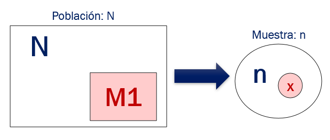

Modelos de probabilidad notables.
Muchas variables aleatorias provienen de experimentos similares. Identificarlos nos ahorrará tiempo en determinar las funciones de probabilidades, y sus parámetros cada vez que trabajemos con ellas.
Por ejemplo, el resultado de interés en muchos experimentos es un resultado que solo puede tomar dos valores:
- Observar a un persona y ver si está enferma o no,
- Lanzar una moneda y observar si obtenemos cara o sello,
- Observar una persona y ver si está empleada o desempleada,
- Observar un transistor y ver si está defectuoso o no, etc
La distribución de probabilidad que describe a una variable aleatoria que puede tomar el valor de \(1\) con probabilidad \(p\) y \(0\) con probabilidad \(q=1-p\), se conoce como distribución Bernoulli.
Experimento Bernoulli
Un experimento de Bernoulli es un experimento aleatorio con dos únicos resultados posibles a los que llamaremos:
- Éxito (E)
- Fracaso (F)
Una probabilidad está asociada a cada uno de los dos resultados posibles:
- A la probabilidad de éxito le llamamos p: \[P(E)=p\]
- A la probabilidad de fracaso también se le conoce como \(q\): \[P(F)=1-p=q\]
4.3 Distribución Bernoulli
Si se define una variable aleatoria como \(X:\) Número de éxitos en un experimento de Bernoulli. Esta variable aleatoria (\(X\)) sigue una distribución Bernoulli. Su función de probabilidad esta dada por la siguiente función de probabilidad:
\[ f(x = \left\{ \begin{array}{lr} p^x(1-p)^{1-x} & x \in \{0,1\}\\ 0 & o.c. \\ \end{array} \right. \]
La tabla de probabilidades sería la siguiente para una variable con distribución de probabilidad Bernoulli
4.3.1 Media y varianza
La media y varianza para esta variable sería lo siguiente:
\[\mu_x=E(X)=p\] \[\sigma^2_x=Var(X)=p(1-p)\]
Note que un experimento Bernoulli es solamente una repetición del experimento con dos posibles resultados. Usualmente, nos interesa el resultado de la repetición de varios experimentos Bernoulli independientes, y en ese caso se usará la distribución Binomial.
4.4 Distribución Binomial
Sea X: el número total de éxitos en ‘n’ experimentos bernoulli independientes. Esta variable aleatoria X tiene una distribución binomial si se cumplen estas condiciones:
- Hay un número fijo de experimentos Bernoulli (n).
- La probabilidad de éxito (p) es la misma para cada experimento.
- Los ensayos son independientes, es decir, el resultado de un ensayo no influye en el de ningún otro.
Se denota \(X \sim B(n,p)\) y se lee “X sigue una distribución Binomial con parámetros n y p.”
Para esta variable, su función de probabilidad es la siguiente:
\[ f(x) = \left\{ \begin{array}{lr} {n \choose x}p^x(1-p)^{n-x} & x \in \{0,1,...,n\}\\ 0 & o.c. \\ \end{array} \right. \]
4.4.1 Media y varianza
Su media y varianza serían los siguientes:
\[E(X) = np\] \[Var(X)=np(1-p)\]
Propiedad reproductiva
Si \(X_1 \sim Binomial(n_1, p)\) y \(X_2 \sim Binomial(n_2,p)\) entonces, \[X_1 + X_2 \sim Binomial(n_1+n_2, p)\]
4.4.2 Gráficamente
En el siguiente gráfico tenemos \(f(x)\) y \(F(x)\) para dos variables aleatorias \(X_1\) y \(X_2\).
\[X_1 \sim B(n=20, p=0.1)\] \[X_2 \sim B(n=20, p=0.5)\]
4.4.3 Aplicaciones
Uso de R
Sea \[X \sim Binom(n=20, p=0.1)\]
- Calcular la probabilidad de que X sea 1
Calculo de \(P(X=1)\) en R:
dbinom(1, 20, 0.1)## [1] 0.2701703- Calcular la probabilidad de que X sea menor igual que 1
Calculo de \(P(X \leq 1)\) en R:
pbinom(1, 20, 0.1)## [1] 0.391747- Calcular la probabilidad de que X sea mayor igual que 1 y menor igual que 10 Calculo de \(P(1 \leq Y \leq 10)\) en R:
# Calculo de probabilidades para x=1 a x=10
dbinom(1:10, 20, 0.1)## [1] 2.701703e-01 2.851798e-01 1.901199e-01 8.977883e-02 3.192136e-02 8.867045e-03 1.970454e-03
## [8] 3.557765e-04 5.270763e-05 6.442043e-06# Suma de probabilidades:
sum(dbinom(1:10, 20, 0.1))## [1] 0.8784226- Calcular la probabilidad de que X sea mayor a 8
Calculo de \(P(X>8)\) en R:
# P(X>8) = 1-F(8)
1 - pbinom(8, 20, 0.1)## [1] 5.985853e-05Caso: Consumo de frutas
- Se cree que el 15% de peruanos consume frutas en un dia cualquiera.
Si asumimos que el consumo en un dia cualquiera (durante la semana) es independiente de otros dias. Podemos definir la siguiente variable: \(X\) el número de días a la semana que una persona consume fruta, y esta variable seguirá un modelo Binomial:
\[X \sim Binomial(n=7, p=0.15)\]
Calcular:
- La probabilidad de que una persona consuma frutas exactamente 5 días a la semana.
Calculamos \(f(5)=P(X=5)\)
dbinom(5,10, 0.15)## [1] 0.008490856- La probabilidad de que una persona consuma 5 frutas o menos en la semana.
Nos piden \(F(5)=P(X<=5)\)
pbinom(5,10, 0.15) ## [1] 0.9986168- ¿Cuál es el valor esperado del número de frutas a consumir por semana?
Será \(\mu_X=E(X)=n*p\)
# n*p
10*0.15## [1] 1.5- Calcular la varianza de X
Será \(\sigma_x^2=Var(X)=n*p*(1-p)\)
# n*p*(1-p)
10*0.15*(1-0.15)## [1] 1.275Caso: Aprobación presidencial.
En Mayo del 2020, la empresa Ipssos realizó una encuesta a nivel nacional para medir la aprobación de la gestión del presidente. El muestreo fue estratificado; sin embargo, por simplicidad para nuestro ejemplo, asumiremos que el muestreo fue simple.
Encuestados: 1020 personas.
Resultados: El 80% (816 personas) afirmó que aprueba la gestión del presidente de la republica
Dado que el número de personas en la población en muy grande (millones), cada selección de un encuestado es un experimento bernoulli aproximadamente con la misma probabilidad de éxito(aprobar la gestión). Entonces, se podría definir:
El modelo de probabilidad para X \[X \sim Binomial(1020, p)\] donde
- \(n=1020\) es el número de encuestados y es un número fijo.
- \(p\) es la probabilidad que una persona seleccionada al azar responda que aprueba la gestión del presidente.
- El rango de la variable es \[R_Y =\{ 0,1,2,\dots,1018,1019,1020 \}\]
Usualmente nos preguntaremos:
- ¿Cuánto vale \(p\)? (Note que \(p\) es un parámetro)
Varios valores de \(p\) pueden ser congruentes con los datos observados. Más adelante veremos cómo estimar p a partir de una muestra.
4.5 Distribución Hipergeométrica
El experimento hipergeométrico consiste en extraer al azar y sin sustitución n elementos de un conjunto de N elementos, M_1 de los cuales son etiquetados como “éxitos” y M_2=N-M_1 son “fracasos”.

Sea X = Número de “éxitos” obtenidos en una muestra (sin reemplazo) de tamaño n. X tiene distribución hipergeométrica y se escribe de la siguiente manera:
\[X \sim H(N, M_1, n)\]
El rango de la variable esta dado por \[R_X= \{ \max{(0,n-M)} ,\dots,\min{(n,M)} \}\]
La función de probabilidad de X con parámetro \(N\), \(r\) y \(n\) es de la siguiente forma:
\[P(X=x) =\frac{\left (\begin{array}{c} _{M_1} \\ x \end{array} \right ) \left ( \begin{array}{c} N-M_1 \\ n-x \end{array} \right ) } { \left ( \begin{array}{c} N \\ n \end{array} \right ) }\]
4.5.1 Esperanza y varianza
\[\mu_X=E(X) = n\frac{M_1}{N}\]
\[\begin{aligned} \sigma^2_X=Var(X) &=& n \frac{M_1}{N} \left ( 1 - \frac{M_1}{N} \right ) \frac{N-n}{N-1} \nonumber\end{aligned}\]
4.5.2 Gráficamente
En el siguiente gráfico tenemos \(f(x)\) y \(F(x)\) para tres variables aleatorias \(X_1\), \(X_2\) y \(X_3\).
\[X_1 \sim HG(N=60,M1=30,n=10)\] \[X_2 \sim HG(60,20,10)\] \[X_3 \sim HG(60,10,10)\]
4.5.3 Aplicaciones
Uso en R
En R tenemos las funciones:
dhyper(x, m, n, k)phyper(q, m, n, k)qhyper(p, m, n, k)rhyper(nn, m, n, k)
donde
mes el número de éxitosnel número de fracasoskel número de extracciones realizadas.
Alumnos desaprobados
Se tienen 50 alumnos en el curso de los cuales 10 desaprueban el curso. Se escoge aleatoriamente 5 de ellos para entrevistarlos, y se define la siguiente variable:
X: el número de alumnos que desaprueban el curso en una muestra aleatoria (sin reposición) de 5 alumnos.
Observemos que X sigue una distribución hipergeométrica. \[X \sim HG(N=50, M=10, n=5)\] En R los parámetros son un poco diferentes:
mes el número de éxitos en la población.nel número de fracasos en la población.kel número de extracciones realizadas.
N = 50 # total
r = 10 # éxitos. (desaprobar)
n = 5 # tamaño de la muestra obtenida de m+n.
M1 = r # éxitos en total
M2 = N-r # Los fracasos en total.
M1+M2 # = N## [1] 50# La probabilidad de que ninguno seá éxito (x=0):
dhyper(x=0, M1, M2, n)## [1] 0.3105628- Calcular la probabilidad de encontrar exactamente 2 alumnos que desaprueben el curso.
\(f(2)\)
dhyper(2, M1, M2, n)## [1] 0.2098397- Calcular la probabilidad de encontrar 2 o menos alumnos que desaprueben el curso.
\(F(2)\)
phyper(2, M1, M2, n)## [1] 0.9517397- Calcular la probabilidad de tener al menos 1 y máximo 5 alumnos que desaprueben el curso.
sum(dhyper(1:5, M1, M2, n))## [1] 0.6894372- Probabiliad de tener más de 2 alumnos desaprobados.
Nos piden \(1-F(2) = 1-P(X<=2)\)
1 - phyper(2, M1, M2, n)## [1] 0.04826034.6 Distribución Poisson
Sea \(X\) una variable aleatoria con rango \(R_X = \{ 0 ,1,2,\dots \}\). Se dice que \(X\) sigue una distribución Poisson con parámetro \(\lambda\) si su función de probabilidad es la siguiente:
\[f(x) =\frac{e^{-\lambda} \lambda^x}{x!} \ , \ x = 0,1,2,\dots\]
Función de distribución acumulada:
\[F(x) = \sum_{i=0}^{i\leq x} \frac{e^{-\lambda} \lambda^i}{i!}\]
4.6.1 Esperanza y varianza
A partir de este modelo de probabilidad, su esperanza y varianza serán los siguiente:
\[E(X) = \lambda\] \[Var(X)=\lambda\]
La distribución Poisson se utiliza con frecuencia para modelar conteos de eventos raros. Ejemplos:
- Número de accidentes de tránsito que ocurren en determinado intervalo de tiempo.
- Número de inundaciones durante un año.
- Número de sismos durante un intervalo de tiempo.
- Número total de artículos defectuosos en una línea de producción en un intervalo de tiempo.
- Número de personas que acceden a internet en un tiempo.
Relación con la distribución Binomial
También, es posible utilizar la distribución Poisson en un caso límite de la distribución binomial cuando el número de pruebas bernoulli es muy grande y la probabilidad de éxito \(p\) es pequeña.
4.6.1.1 Proceso de Poisson
La distribución de Poisson está asociada al proceso de Poisson, que es un modelo para una secuencia de eventos que ocurren “al azar,” sin memoria.
Si los sucesos se producen en un proceso de Poisson con una tasa \(\lambda\) (sucesos por unidad tiempo), entonces el número de eventos en cualquier intervalo de tiempo de longitud t tiene la distribución de Poisson con el parámetro \(\lambda t\). En un proceso de Poisson los eventos son independientes: la ocurrencia de un evento no afecta la probabilidad de ocurrencia de otro.
4.6.1.1.1 Caso: Autobuses
Suponga que llega a una parada de autobus y se decide a esperar un autobús que pasa cada 20 minutos.
Si no sabe nada del horario, la probabilidad de que llegue un autobús en el próximo minuto es de 1bus/20minutos= 0.05 bus/minuto.
Supongamos que nos informan que el último autobús ha llegado hace 19 minutos. Si se sabe que los autobuses circulan “a tiempo,” la probabilidad de que un autobús llegue en el próximo minuto sería ahora 1.
Pero si el bus suele retrasarse, ya no estarías tan seguro. Si los autobuses se suelen retrasarse o adelantarse demasiado, la información sobre el último autobús sería irrelevante. Los autobuses llegarían siguiendo un proceso de Poisson con una tasa 1/20 = 0.05 autobuses por minuto.
4.6.2 Gráficamente: Distribución Poisson
Observamos, a continuación, dos variables con distribución Poisson con diferentes parámetros. \[X_1 \sim Poisson(10)\] \[X_2 \sim Poisson(5)\]
4.6.3 Aplicaciones
Usando R
Sea X una v.a. con distribución de Poisson con parámetro \(\lambda=2\). \[X \sim Poisson(\lambda=2)\]
Para calcular la probabilidad en un valor de x utilizamos dpois.
dpois nos devuelve la función de probabilida
Calculo de \(f(5)=P(X=5)\):
dpois(5,lambda=2)## [1] 0.03608941Para calcular la probabilidad acumulada: ppois
Calculo de \(F(5)=P(X\leq5)\):
ppois(5,lambda=2)## [1] 0.9834364Caso: Número de dependientes
Supongamos que deseamos entender el número de dependientes en el país. Para esto, definimos la variable aleatoria \(X\): número de dependientes que tiene una persona en el país. Ahora, supongamos que \(X \sim Poisson(2)\). (Estamos asumiendo que conocemos \(\lambda\) y que es igual a 2).
\[X \sim Poisson(2)\]
- Calcular la probabilidad de que una persona no tenga dependientes.
- Utilizando el modelo de probabilidad de Poisson, sabemos que sería lo siguiente:
\[f(0) = P(X=0) = e^{-2} = 0.1353353\]
- También lo podemos calcular en R:
dpois(0,lambda=2)## [1] 0.1353353- Calcular la probabilidad de que una persona tenga un dependiente.
- Utilizando la función de probabilidad del modelo Poisson:
\[f(1)=P(X=1)=2e^{-2}=0.2706706\]
- En R:
dpois(1,lambda=2)## [1] 0.2706706- Calcular la esperanza y varianza de X.
\[E(X)=\lambda=2\] \[Var(X)=\lambda=2\]